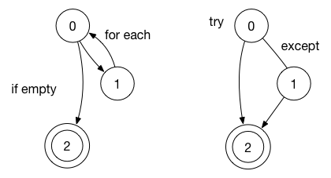
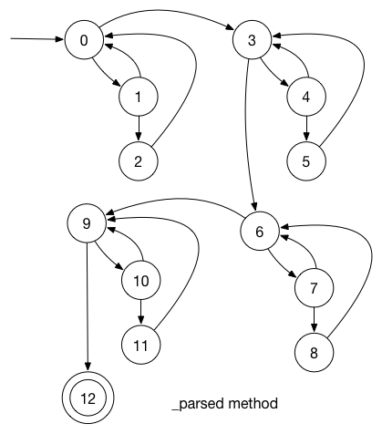
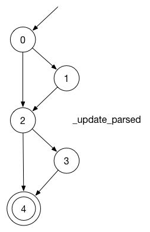

Mark Birger (xbirge00) 5.4.2015
Vlastni projekt (Testovaní modulu dialogového sytému)
Bakalářská práce: Dialogový systém pro komunikaci s reálným robotem
Obsah balíku:
➜ ITS tree
.
├── dialog_system
│ ├── src (kompletní zdrojové soubory dialogového systému)
│ │ ├── dialog.py
│ │ ├── examples
│ │ │ ├── assistant.dlg
│ │ │ ├── demo.dlg
│ │ │ ├── echo.dlg
│ │ │ ├── movement.py
│ │ │ └── tickets.dlg
│ │ ├── link_parser.py
│ │ ├── main_master.py
│ │ ├── main_slave.py
│ │ ├── parser.py
│ │ ├── phrase.py
│ │ ├── returns.py
│ │ ├── scope.py
│ │ ├── server.py
│ │ ├── speech.py
│ │ └── states.py
│ └── test (testovaný modul + testy + fake moduly)
│ ├── link_parser.py
│ ├── phrase.py
│ ├── scope.py
│ └── test.py
├── html_report (html verze reportu)
│ ├── parse.png
│ ├── test-report.html
│ ├── tryfor.png
│ └── update.png
└── test-report.pdf
5 directories, 25 files
Dialogový systém asi nepodaří spustit lokálně, vyžaduje spoustu Python a debian závislosti. Ted' pracuju nad vytvářením environmentu. Online možné vyzkoušet na neukončené stance tutroialu na markbirger.info/dialog.
Spuštěni testu:
cd ./dialog_system/test
python3 test.py
Vyzkoušeno na:
Python 3.4.2 (v3.4.2:ab2c023a9432, Oct 5 2014, 20:42:22)
[GCC 4.2.1 (Apple Inc. build 5666) (dot 3)] on darwin
Fakticky funguje na jakémkoliv UNIXu s Python verze 3.
Dialogový systém je mluvčí rozhání pro software. V rámci bakalářské prací píšu Framework pro vývoj dialogového systému a par přikladu dialogových systému, vyvinutých pomoci tohoto frameworku.
Cílem je otestovat modul zpracovaní (načtení a použiti) jednotlivých frázi z popisu dialogu. Tento modul se nazývá (phrase.py).
Popis dialogu je textový soubor, který obsahuje strom, uzly kterého jsou stavy. Příklad popisu dialogu:
Hello
Hello
What time is it?
A time is `get_time`.
What is your name?
My name is `name`
Your name is `name~John` #rename the robot
No problems, my name is `name`
Na rádcích popisu dialogu jsou frázi, a speciální sekvence:
name. Kdy tato fráze bude mluvena/porovnávaná s vstupní frázi, provede se ta substituce na hodnotu z proměnné name.variable:False. Kdy systém bude procházet pres tento stav (odpovídat pomoci teto frázi nebo uživatel řekne tuto frázi), nastaví se tato proměnná.name~John. Dialogový systém využívá Link Grammar parser pro zpracovaní přirozené reci. Když uživatel řekne Your name is Paul (příklad nahoře), tak dialogový systém bude vyhledávat slovo, které má shodný vazby s ostatními slovy jako uvnitř vety Your name is John. Ve výsledku nastaví se proměnná name na hodnotu Paul.routine<1. Dialogový systém je rozhraní, a tento dialogový systém navrhnout pro využiti na robotech. Když robot jede, nemusí se blokovat dialogový systém. Proto každou aktivitu spoušti v jinem procesu. Pokud uživatel chci změnit chovaní aktivity během dialogu, musíme odesílat do spuštěných aktivit data. Když systém bude procházet přes tento stav, odešle se jednička do aktivity s názvem routine.Příklad kombinace sekvence:
Hello world `my_var:32` `name~John` `routine1<"stop"`
Vstupem tohoto modulu je řetězec, obsahující jednu frázi z případnými sekvencemi. Druhym parametrem je objekt třídy Scope. Objekt třídy Scope je slovník, obsahující proměnné a funkci z oblasti globální vidomosti. Taky tento modul vyžaduje modul link_parser. Module link_parser obsahuje bindingy pro link_grammar parser (taky psal jejich sám).
Pro tito dva moduly (scope a link_parser) v rámci testovaní jsem vytvořil náhradní moduly, který simuluji aktivitu těchto modulu pro případy testovaní.
V rámci testovaní chtěl bych otestovat všichni metody třídy Phrase, kritériem pokryti nejméně EC. Taky chtěl bych otestovat regulární vyraz, pro načtení sekvence.
Cely dialogový systém je napsán v programovacím jazyce Python 3. Pro testovaní jsem rozhodoval mezi modulem unittest a modulem doctest. Oba jsou součásti balíku Python.
Rozhodl jsem využít unittest, protože:
unittest je výkonný framework. Kromě tradičních porovnávajících assertu, využíval jsem assertRaises pro kontrolu správních výjimek. Jediná věc, která není jasna na první pohled je pořadí spuštěni testu. Pořadí spuštěni testu je definováno podle abecedy, podle nazvu testovacích sad.
Pro každou metodu jsem kreslil CFG a podle jeho složitosti rozhodoval o zvoleném kritériu pokryti. Pro některý metody jsem implementoval EPC, pro ostatní, který mají rozsáhlý graph, EC.
| Název metody | Zvoleny kritérium |
|---|---|
| _init_ | Jeden Basic Block (EPC) |
| _parse | Edge Coverage |
| _validate | Skipped (funkce jeste neimplementovana) |
| _shift_other | Edge Coverage |
| _create_substition | Jeden Basic Block (EPC) |
| _create_fixed_setter | Jeden Basic Block (EPC) |
| _erase_fixed_setters | Edge-Pair Coverage |
| _create_flexible_setter | Jeden BasicBlock (EPC) |
| _erase_flexible_setters | Edge-Pair Coverage |
| _link_flexible_setters | Edge Coverage |
| _create_routine_request | Jeden Basic Block (EPC) |
| _erase_routine_requests | Edge-Pair Coverage |
| evaluate | Edge-Pair Coverage |
| _update_parsed | Edge-Pair Coverage |
| accept | Edge Coverage |
| compare | Edge Coverage |
| _str_ | Jeden Basic Block (EPC) |
Kromě toho, jsem otestoval regulární vyraz jiným způsobem (vice dále).
Python 3 jako programovací jazyk má vysoký úroveň abstrakce. Tento projekt využívá syntaktické konstrukci jako try/except a for (fakticky foreach). Tak jsem kreslil graphy pro tito případy:

Rozdělil jsem všichni testovací případy do několika testovacích sad podle sdílených funkci inicializaci a podle sémantiky.
| Název testovacího případu | Popis testovacího případu |
|---|---|
| test_create_substition | Vložení substituce do seznamu |
| test_create_fixed_setter | Vložení fixed setteru do seznamu |
| test_create_flexible_setter | Vložení flexible setteru do seznamu |
| test_create_routine_request | Vložení předávaní hodnot aktivitě do seznamu |
| Název testovacího případu | Popis testovacího případu |
|---|---|
| test_validate | Skipped, ještě neimplementované |
| test_shift_other | Před předáváním do Link Grammar parseru odstraňujeme/vyměňujeme všichni sekvence, testovaná metoda posouvá další sekvence doleva |
| Název testovacího případu | Popis testovacího případu |
|---|---|
| test_erase_fixed_setters | Vymazaní fixed setteru |
| test_erase_flexible_setters | Vymazaní flexible setteru |
| test_erase_routine_requests | Vymazaní předávaní hodnot aktivitě |
| Název testovacího případu | Popis testovacího případu |
|---|---|
| test_parse_regex | Speciální případ testovaní (vice dále) |
| test_parse | Testovaná hlavni metoda zpracováváni řetězců |
| Název testovacího případu | Popis testovacího případu |
|---|---|
| test_init | Test inicializace objektu fráze (komplexní metoda) |
| test_link_flexible_setters | Test provazovaní frázi a struktury z Link Grammar parseru |
| test_evaluate | Test metody, která provádí substituce a volaná, kdy robot říká odpověď |
| test_update_parsed | Test metody, která obnovuje vazby Grammar parseru v případě změny hodnot z modulu Scope |
| test_str | Test volaní str() metody |
| test_compare | Když uživatel řekne frázi, dialogový systém musí najit podobnou frázi ze množiny očekávaných frázi. Testovaná metoda vrací shodnost příchozí frázi podle struktury vety |
| test_accept | Testovaná metoda musí nastavit změny ve scope objektu a předat hodnoty v aktivity |
Vysvětleni pro test_update_parsed:
Is your name `name`?
Yes
Pokud někdo přejmenuje robota, a zeptá tuto otázku, musí se obnovit vazby NLP.
Je to otestovaný regulární vyraz:
`([a-zA-Z0-9_]*)((\:|\~|\<)([^`]+))?`
Pro tento vyraz jsem nakreslil CFG, ve kterém každý kvantifikátor je if/else konstrukce. Kazda vyhledávací skupina je basic block. Pak jsem implementoval alogoritm který pomoci rekurzi generuje různý výrazy pro testovaní. Celkem jejich 723. Je to obtížné otestovat 723 případy ručně, ale mohl jsem získat tito znalosti automaticky:
Dosáhl jsem kritéria pokryti Edge Coverage na celém modulu. Je potřeba použít dekompozice, abych zjednodušit některé metody pro jednodušší testovaní. Například metoda _parse:

To je příklad jednoduššího testu metody _update_parsed (if uvnitř try):

Ve výsledku jsem odhalil a opravil jednu chybu. Mam návrh opravy pro druhou chybu. A nejdůležitější, že jsem mnohem lepe pochopil svůj kód a metody návrhu testovacích případu.
Během testovaní jsem nalezl 4 chyby. Reportoval jejich sám sobe :)
F.....s.......FF.F
======================================================================
FAIL: test_parse (__main__.ParsingTest)
----------------------------------------------------------------------
Traceback (most recent call last):
File "test.py", line 220, in test_parse
self.assertEqual(phrase.latest, 'Hello value John ')
AssertionError: None != 'Hello value John '
======================================================================
FAIL: test_init (__main__.UsageTest)
----------------------------------------------------------------------
Traceback (most recent call last):
File "test.py", line 248, in test_init
self.assertEqual(phrase.latest, "Hello value John ")
AssertionError: None != 'Hello value John '
======================================================================
FAIL: test_link_flexible_setters (__main__.UsageTest)
----------------------------------------------------------------------
Traceback (most recent call last):
File "test.py", line 270, in test_link_flexible_setters
[['object1', 'word', 0, 4, 1], ['object2', 'word', 8, 12, 3]])
AssertionError: Lists differ: [['object1', 'word', 0, 4, 3], ['object2', 'word', 8, 12, 3]] != [['object1', 'word', 0, 4, 1], ['object2', 'word', 8, 12, 3]]
First differing element 0:
['object1', 'word', 0, 4, 3]
['object1', 'word', 0, 4, 1]
- [['object1', 'word', 0, 4, 3], ['object2', 'word', 8, 12, 3]]
? ^
+ [['object1', 'word', 0, 4, 1], ['object2', 'word', 8, 12, 3]]
? ^
======================================================================
FAIL: test_update_parsed (__main__.UsageTest)
----------------------------------------------------------------------
Traceback (most recent call last):
File "test.py", line 305, in test_update_parsed
self.assertRaises(KeyError, phrase._update_parsed)
AssertionError: KeyError not raised by _update_parsed
----------------------------------------------------------------------
Ran 18 tests in 0.012s
FAILED (failures=4, skipped=1)
První a druha selhaní (test_parse, test_init) testovacího případu ovlivněny jednou chybou uvnitř init metody. Definoval jsem atributy třídy až po volaní metody, která měnila tyto atributy. Podařilo se tuto chybu rychle opravit.
Třetí selhaní (test_link_flexible_setters) testovacího případu potvrdilo očekávaný problém v případě načtení dvou flexibilních setteru ze stejného slova. Například:
`object1~word` is `object2~word`
První slovo v tomto případě taky bude mít vazbu s třetím slovem word. Systém nerozlisuje dva stejných slova uvnitř konstrukce, vracené od parseru přirozeného jazyku. Je to algoritmická chyba. Dosud není opravena.
Čtvrtá chyba je neočekávané chovaní, které způsobeno tím, ze dialogový systém ještě ve fázi vývojů, a výjimka v příštích verzi bude zpracovávaná na fázi porovnaní fráze.